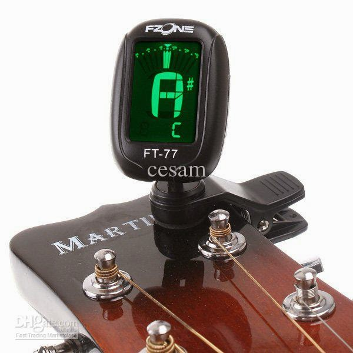

Este es uno de los aspectos más difíciles e importantes para el que comienza a estudiar la guitarra, la afinación. Es importante que tu guitarra este afinada,
por el simple hecho de que te será imposible aprender a tocarla sino lo esta.
| Nota que debe dar cada cuerda de la Guitarra
Antes de empezar a aprender los diferentes métodos de afinar la guitarra, tenemos que conocer que nota debe dar cada cuerda: La cuerda superior (la más gruesa
de todas, también llamada 6ta. cuerda) debe dar la nota Mi, las notas de las cuerdas siguientes son La, Re, Sol, Si y la cuerda inferior (la más delgada de todas,
también llamada 1ra. cuerda) también al igual que la sexta cuerda debe dar la nota de Mi, pero más aguda claro está.
| Esa afinación es la estándar, ya que una guitarra puede estar afinada de diferentes formas.|
| Método básico de Afinación
Aflojas la sexta cuerda hasta que no dé ningún sonido, y luego la irás subiendo (apretando) muy despacio hasta que dé un sonido claro sin subirla mucho; en ésta
disposición se considerará ya afinada la sexta, pasamos entonces a afinar la 5ta. cuerda que después de aflojarla como se hizo con la anterior la irás subiendo muy
poco a poco hasta que ésta cuerda tocada al aire (es decir, sin que la pise la mano izquierda) produzca el mismo sonido que el de la sexta cuerda pisada en el 5to.
traste. Ya afinada la quinta se procederá sucesivamente a la afinación de las demás cuerdas de acuerdo a la tabla siguiente:
-La cuerda 6ta. pisada en 5to. traste da el sonido que corresponde a la 5ta. al aire.
-La cuerda 5ta. pisada en 5to. traste da el sonido que corresponde a la 4ta. al aire.
-La cuerda 4ta. pisada en 5to. traste da el sonido que corresponde a la 3ra. al aire.
-La cuerda 3ra. pisada en 4to. traste da el sonido que corresponde a la 2da. al aire.
-La cuerda 2da. pisada en 5to. traste da el sonido que corresponde a la 1ra. al aire.
| Este método puede ser utilizado en cuanto se tenga un oído musical o un oído entrenado, ya que no teniéndolo puede resultar tardado o incluso molesto, o en todo
caso en cuando lo hagamos por entrenamiento de nuestro oído.|
| Afinación sobre una nota como referencia
Si no estás seguro que dos cuerdas suenan iguales puedes comprobarlo viendo que una de las cuerdas vibra al sonar la otra, esto se debe a que están al mismo tono.
| Afinador electronico
Tambien puedes afinar tu guitarra por medio de un aparato electronico, que con mucha facilidad te sera util, y lograras afinar tu guitarra de una manera muy comoda y sin
muchas complicaciones, ya que lo unico que haras con el aparato es colocarlo en el clavijero e ir sonando las cuerdas y ella misma te ira marcando cuando cada cuerda este afinada.
Un afinador electronico es buena opcion, si tienes la falicidad de comprarte o conseguirte uno seria una opcion favorable; despues de todo no son muy caros.

| Pero lo recomendable es que puedas afinar tu guitarra a puro oido sin necesidad de aparatos; ya que eso te beneficiara en ciertas ocaciones y tambien seria algo que te distinguiria como un gran musico.|